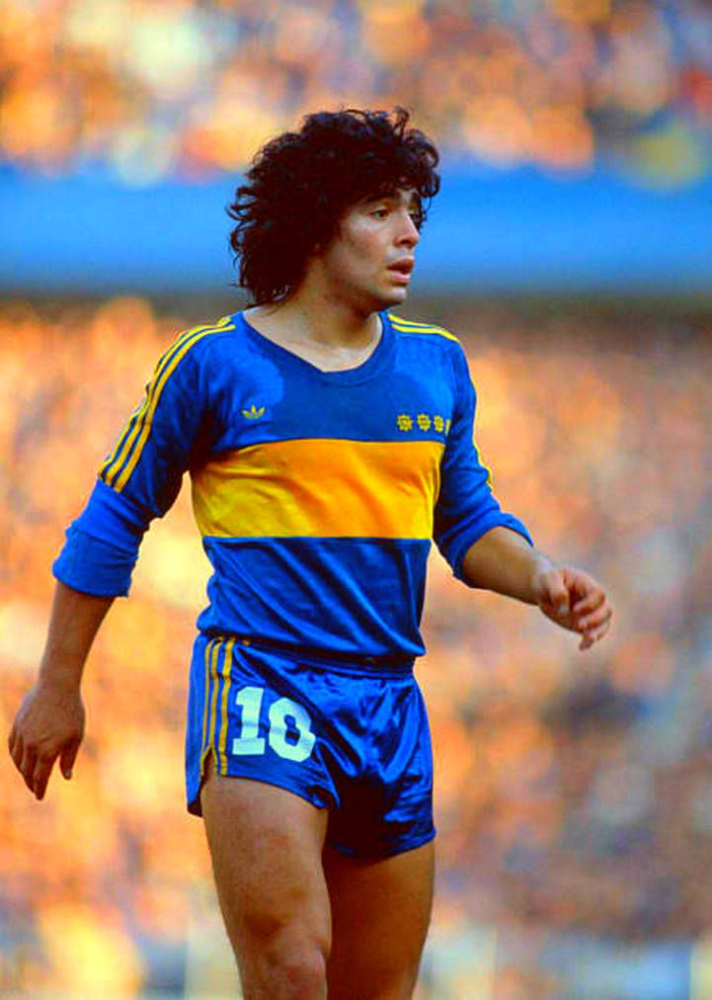
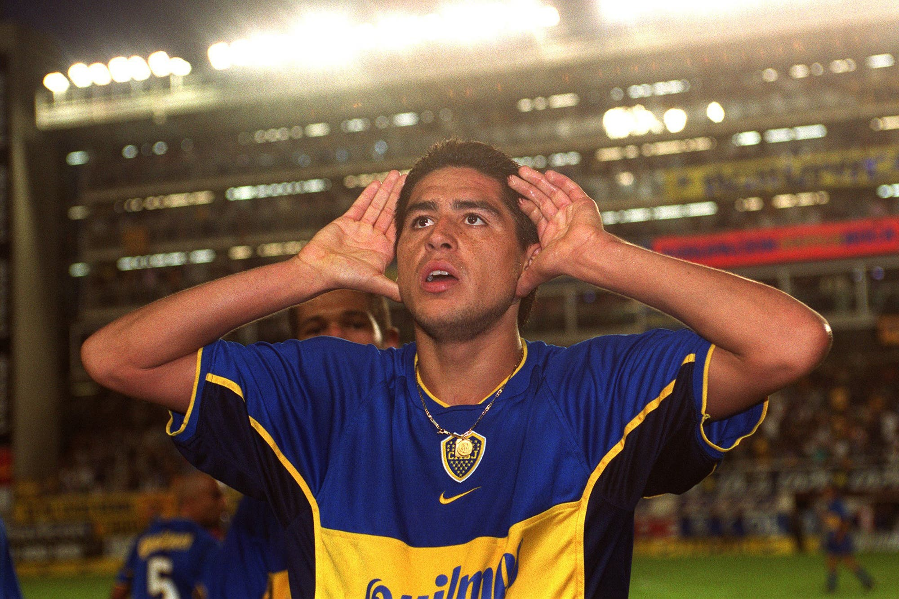
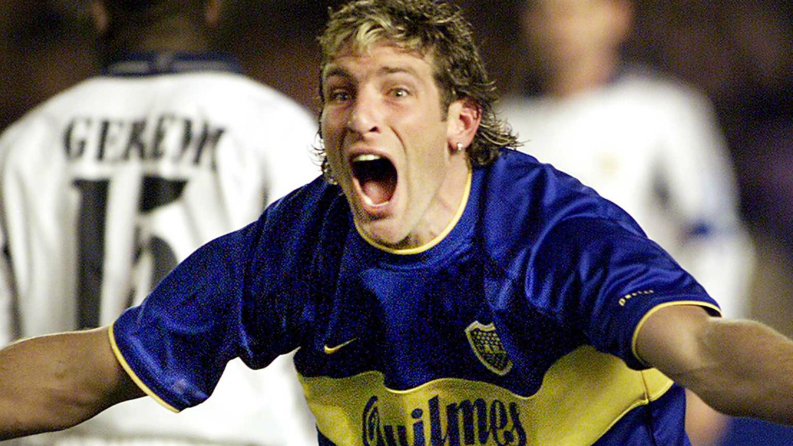
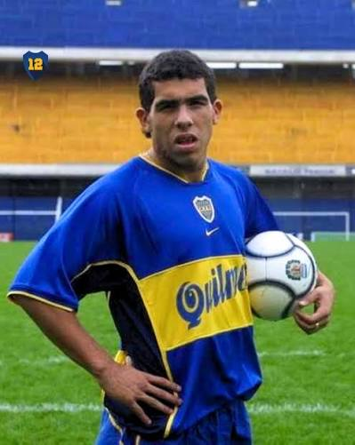

Los grandes ídolos
A lo largo de su historia, Boca Juniors ha contado con futbolistas que dejaron una huella imborrable en el club y en el corazón de sus aficionados. Gracias a su talento, personalidad y grandes actuaciones, estos jugadores se convirtieron en referentes de la identidad xeneize.
Desde figuras legendarias hasta goleadores inolvidables, cada uno contribuyó a construir la historia de una institución reconocida por su pasión y su espíritu competitivo.
-
Diego Armando Maradona

Diego Maradona es una de las figuras más emblemáticas de la historia del fútbol argentino. Su vínculo con Boca Juniors quedó marcado por su enorme talento y su identificación con los colores azul y oro. En 1981 fue protagonista de la conquista del Campeonato Metropolitano y, años después, regresó al club para cerrar su carrera como futbolista en Argentina.
-
Juan Román Riquelme

Juan Román Riquelme es considerado uno de los máximos referentes de Boca Juniors. Reconocido por su visión de juego, su técnica y su capacidad para controlar el ritmo de los partidos, fue una figura fundamental en varias conquistas del club, incluidas las Copas Libertadores de 2000, 2001 y 2007.
-
Martín Palermo

Martín Palermo es uno de los grandes goleadores de la historia de Boca Juniors. Su capacidad para aparecer en los momentos decisivos y su personalidad competitiva lo convirtieron en un ídolo de la hinchada. Es el máximo goleador histórico del club, con 236 goles oficiales.
-
Carlos Tévez

Carlos Tévez surgió de las divisiones inferiores de Boca Juniors y se destacó por su entrega, potencia y habilidad con el balón. Durante sus diferentes etapas en el club, conquistó títulos nacionales e internacionales y se convirtió en uno de los futbolistas más queridos por los aficionados.
Ídolos que hicieron historia
Conoce algunas de las figuras que dejaron su huella en la historia de Boca Juniors.
| Jugador | Posición | Característica | Legado |
|---|---|---|---|
| Diego Maradona | Mediocampista ofensivo | Técnica y creatividad | Figura emblemática del club |
| Juan Román Riquelme | Mediocampista ofensivo | Visión de juego | Referente internacional |
| Martín Palermo | Delantero | Capacidad goleadora | Máximo goleador histórico |
| Carlos Tévez | Delantero | Potencia y entrega | Ídolo surgido de las inferiores |
Una historia llena de gloria
Boca Juniors ha construido una trayectoria destacada tanto en el fútbol argentino como en las competiciones internacionales. A lo largo de su historia, el club ha conquistado títulos que marcaron distintas generaciones y fortalecieron su reconocimiento mundial.
Entre sus logros más importantes sobresalen sus conquistas de la Copa Libertadores y de la Copa Intercontinental, competiciones en las que protagonizó algunos de los momentos más memorables de su historia.
| Competición | Años de conquista | Imortancia | |
|---|---|---|---|
| Copa Libertadores | 1977, 1978, 2000, 2001, 2003 y 2007 | Principal competición de clubes de Sudamérica | |
| Copa Intercontinental | 1977, 2000 y 2003 | Enfrentamiento entre campeones continentales de la época. | |
| Copa Sudamericana | 2004 y 2005 | Competición internacional de clubes sudamericanos. | |